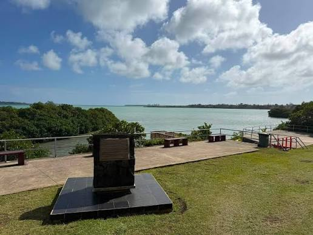

Captain Cook Landing Site

This spot marks where Captain James Cook came ashore on his visits to Tonga in the 1770s. He called Tonga the Friendly Islands because of the welcome he received. Today it is a quiet place by the water with a memorial, good for learning some history.